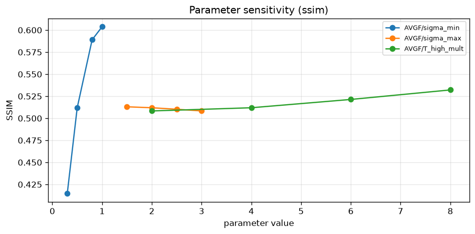
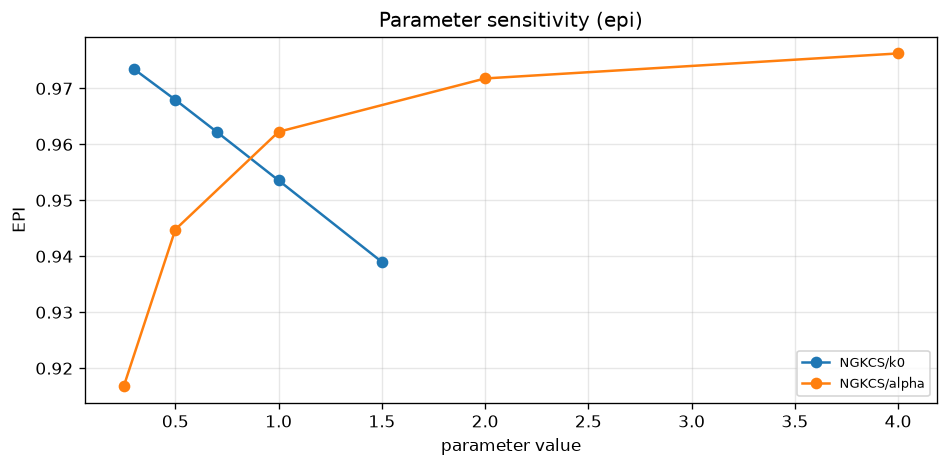
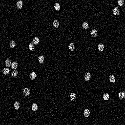
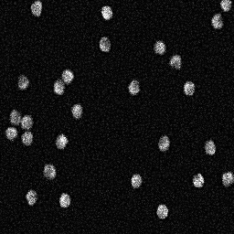
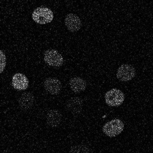
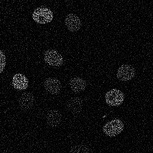
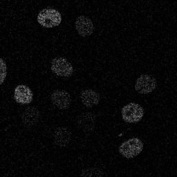
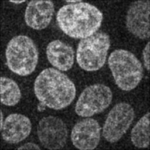
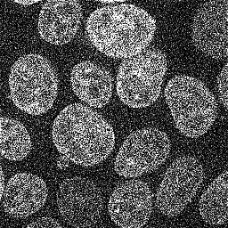
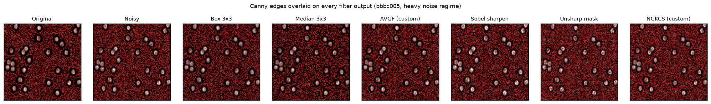

Fluorescence microscopy is a Poisson–Gaussian noise field: gain and read noise ride on top of photon shot noise. Standard denoisers either smooth cells out or sharpen the noise.
The result is a forced choice — every filter in the box trades one error for another.
This deck asks: can a filter be designed that leans into the noise rather than fighting it?
BBBC005 v1 image B23, public dataset of human breast cancer cells. On the left, the clean field. On the right, the same field corrupted with the heavy Poisson–Gaussian noise regime we use throughout this study.
The workhorse of image processing: every output pixel is the arithmetic mean of a 3×3 neighbourhood. Linear, separable, fast — and indiscriminately destructive to edges.
Replace each pixel by the median of its 3×3 neighbourhood. Non-linear, ordering-based — handles salt-and-pepper style outliers cheaply, but cannot distinguish noise-edge from signal-edge.
Two sharpening paths: Sobel is a gradient operator applied additively back onto the noisy field. Unsharp mask subtracts a blurred copy from the original. Both are useful on clean data, both amplify noise.
Adaptive Variance-Gaussian Filter. A Gaussian-weighted average whose per-pixel variance estimate gates how much neighbouring pixels contribute. Smooths homogeneous regions aggressively; leaves high-variance neighbourhoods (edges, cell boundaries) alone.

Noise-Gated Kirsch Compass Sharpening. A Kirsch compass operator produces eight directional edge responses. Each is gated by a noise-budget estimator: when local variance is below the noise floor, the directional response is suppressed. When it exceeds it, the response is sharpened.

Picked one representative case per dataset (heavy / realistic / realistic). Each column shows the same field through a different filter.







Average over all 9 (dataset × regime) configurations. Source: results/tables/all_results.csv. The two custom filters (AVGF, NGKCS) shown on the right alongside the four standards and the noisy baseline.
Same BBBC005 heavy-noise frame, Canny edges (σ=1.5, σ_auto, no post-processing) drawn in red on top of each filter's output. The diagonals we care about: clean cell boundaries on the lines; scattered noise-edges on the surfaces.

The averaged bars below — PSNR, SSIM, Pratt's Figure of Merit — three different ways of asking "how close is this reconstruction to the clean reference?". The custom designs do not top any of them. The honest answer is that no custom design beats Box on this study; the strongest standard wins across all three metrics.
Md. Safius Sifat · 2103085
·
Tausif Muntak Tasin · 2103076
·
Akibul Islam · 2103066
RUET · Department of Computer Science & Engineering